A Computer-aided Multimodal Music Learning System with Curriculum: A Pilot Study
ABSTRACT
We present an AI-empowered music tutor with a systematic curriculum design. The tutoring system fully utilizes the interactivity space in the auditory, visual, and haptic modalities, supporting seven haptic feedback modes and four visual feedback modes. The combinations of those modes form different cross-modal tasks of varying difficulties, allowing the curriculum to apply the “scaffolding then fading” educational technique to foster active learning and amortize cognitive load. We study the effect of multimodal instructions, guidance, and feedback using a qualitative pilot study with two subjects over ~11 hours of training with our tutoring system. The study reveals valuable insights about the music learning process and points towards new features and learning modes for the next prototype.
Author Keywords
NIME, music education, multimodal learning, adaptive learning, haptic guidance, flute.
CCS Concepts
•Applied computing~Arts and humanities~Sound and music computing
•Applied computing~Education~Interactive learning environments
•Human-centered computing~Human computer interaction (HCI)~Interaction devices~Haptic devices
Introduction
Learning to play an instrument mainly involves developing skills in three modalities: auditory, visual, and motory [1]. Traditional music training methods almost solely relied on auditory feedback, so various modern computer-aided tutoring systems have been developed to enhance music learning via interactive visual feedback or motory (haptic) feedback. For example, haptic tutoring has been applied to the piano [2], the Theremin [3], the flute [4], and the drum [5], and visual feedback has been used in music performance games (e.g. Taiko no Tatsujin, Guitar Hero) and tutoring interfaces (e.g. the Interactive Rainbow Score [1]).
However, to our knowledge, machine music tutoring using both visual and haptic feedback has never been investigated. As a result, previous studies only focused on specific musical skills involving few modalities and therefore could not set “general musicality” as the learning goal. To solve that, we propose an audio-visual-haptic tutoring system for flute learning that teaches both sight-playing and song memorization using one general, systematic music curriculum. Concretely, our system uses six on-flute actuators to give haptic guidance to the learner’s fingers. It provides visual knowledge-of-result (KR) feedback using an interactive staff notation. The training curriculum focuses on modulating the scaffold given to the player according to the learning progress, maximizing active learning, and amortizing cognitive load. We conduct a small-scale, long-term, qualitative pilot user study. According to the results, our scaffolding design of the curriculum has various positive effects but can benefit from a finer progression of scaffolding.
In this paper, we first relate our work to some previous studies, then describe the multimodal tutoring system, and finally present the pilot study.
Related Works
Researchers have investigated human’s various sensory modalities through which computer systems may help musical novices learn specific skills. Huang et al. found that learners retained their ability to play a piano song better if the song was repeatedly played on their fingers with vibrotactile “taps” [2]. In contrast with vibrotactile stimulations, haptic guidance is defined to “physically [force] the subject through the ideal motion …, thus giving the subject a kinesthetic understanding of what is required” [6]. Grindlay compared how well learners reproduced a rhythm pattern after learning the rhythm pattern in three ways: audio only (by listening to the rhythm), haptic guidance only (by holding a drum stick that forced them to play the rhythm), and audio + haptic guidance. Although haptic guidance was found to “significantly [benefit] recall of both note timing and velocity” [7], the study did not involve any interactive feedback that responded to the learners’ actions. Fujii et al. developed a 3D haptic support for learning the Theremin and it improved the tempo and the rhythm of the learners’ performance [3]. Their system measured the erroneous force that the learner exerted onto the guiding machine, but the data were only for human experts to assess the performance — not for real-time feedback to the learner. Yang et al. compared the long-term (4-day) retention of 2D motor skills acquired using visual, haptic, and visuohaptic training. Although no significant differences were observed, the study noted the need to "dynamically modify guidance ... according to the learner's skill level" [8], implying the need for a training curriculum. Xia et al. found that musical novices could learn the playing of specific songs on the flute significantly faster if trained with haptic guidance [9], and Zhang et al. augmented the haptic training with adaptive modes that directed the learners’ active attention to the memorization task and therefore improved long-term (3 days) retention [4]. However, these two studies did not involve the visual modality and the learning goal was to play particular songs. Chin et al. used visual feedback to train sight-playing, a basic but generalizable skill of musicality, on the flute [1], but the study did not involve haptic guidance or breath training.
The above studies, we believe, all point towards an ideal tutoring system that:
Fully utilizes the interactivity space in the three modalities: audio+visual+haptic;
Dynamically adjusts the guidance strategy in response to the learner’s skill level and training progress;
And finally, induces generalizable musicality in the learner.
To better understand what it takes to achieve those goals, we propose a multimodal music tutoring system with a general curriculum, which is presented in the next section.
Multimodal Music Tutoring System

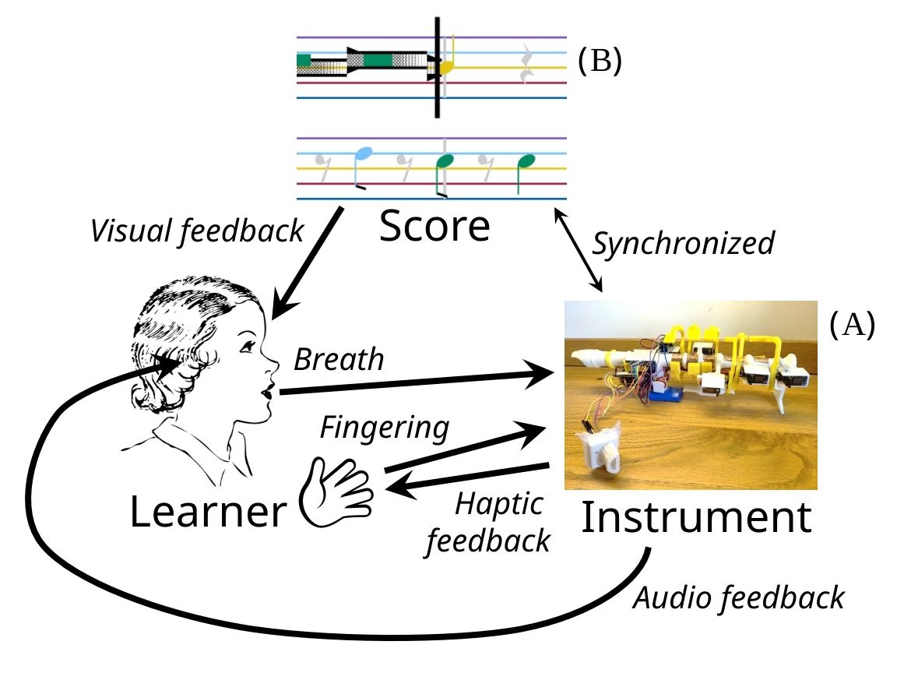
System components.
The arrows show the information flow during training.
Figure 1 illustrates the overall system components: the learner interacts with (A) a sensor-actuator-augmented flute and (B) a user interface on a host PC. The tutoring system monitors and responds to the learner in real-time through audio+visual+haptic while the learner plays the flute. Next, we describe the system functions and the training curriculum.
Hardware Capabilities

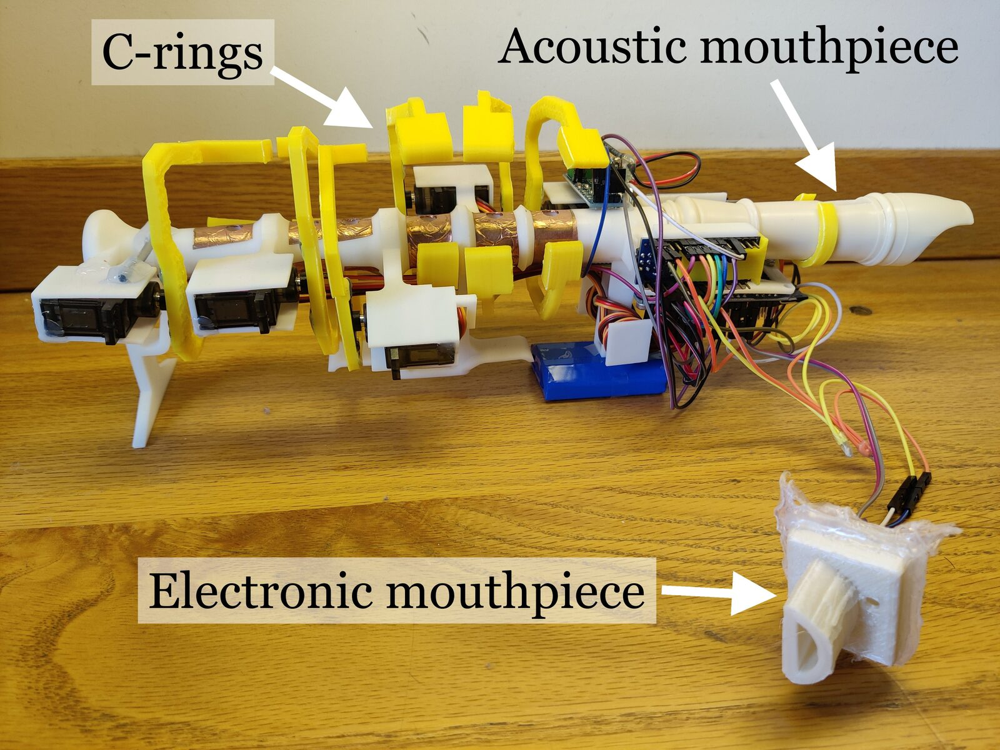
Hardware overview.
The hardware interface (Figure 2) is wireless, equipped with an Arduino Nano, a 5V2A lithium battery, and an HC-05 Bluetooth module for communication with the host PC. One can follow our repo1 to reproduce it.
Actuated C-rings for Haptic Feedback

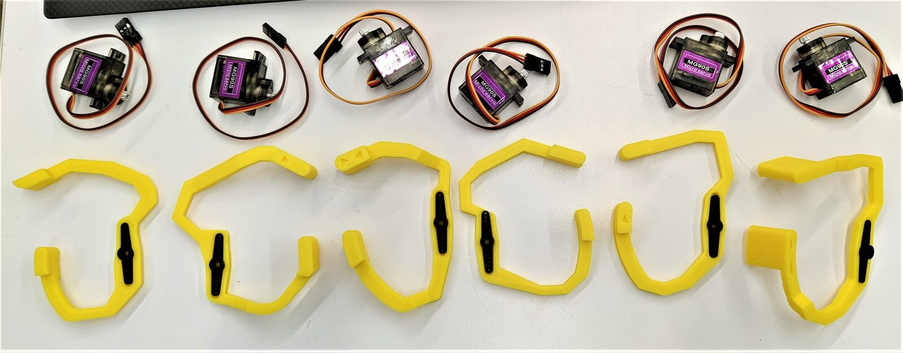
C-rings and servos.
“C-rings” refer to the six yellow, “C”-shaped rings (Figure 3), one for each finger. The c-rings are actuated by six MG90S servo motors driven by a PCA9685 module2.

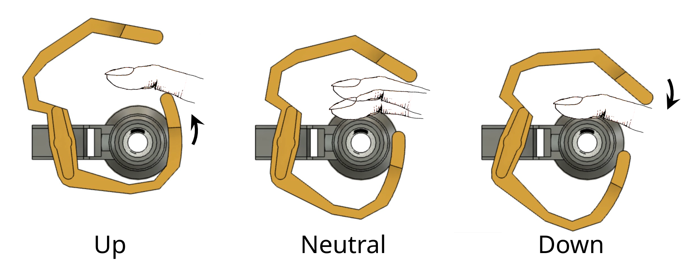
Three elementary states of haptic feedback.
As shown in Figure 4, a c-ring can lift the finger up, hold the finger down, or free the finger by staying in its neutral position. First proposed by [4], this c-ring design turns out much more robust than its alternatives.
Sensors for Fingers and Breath

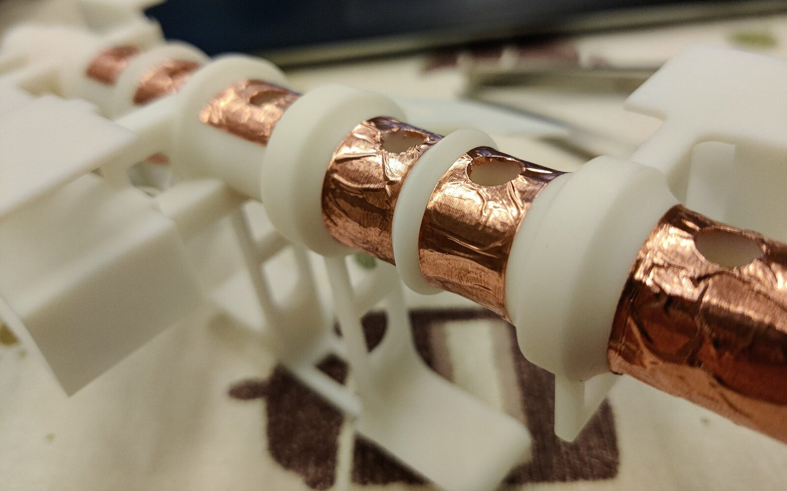
Capacitive sensors for fingers.
Six capacitive sensors (Figure 5) detect the fingers’ contact with the flute hole.

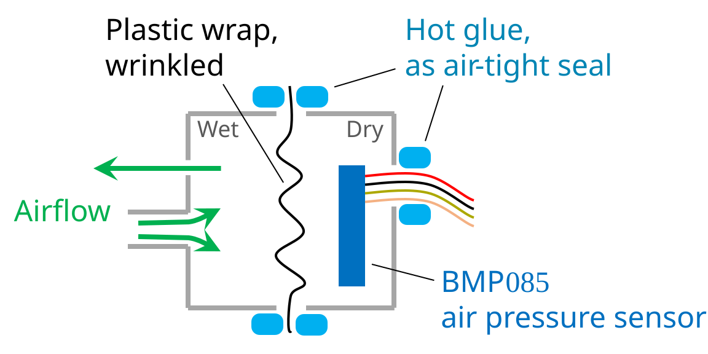
Breath sensor unit.
Inside the electronic mouthpiece (Figure 6), a BMP085 sensor measures the air pressure in the sensor chamber (right). The sensor chamber (right) and the breath chamber (left) are separated by a loose, wrinkled plastic wrap to prevent breath droplets from shorting the sensor circuits. This insulation design keeps the sensor dry even when the entire mouthpiece is underwater. The pressure readings are stable, high-definition, and low-latency as long as the plastic wrap is wrinkled (so that its elastic force does not cancel the pressure conduction too much).
Electronic-Acoustic Hybrid Flute

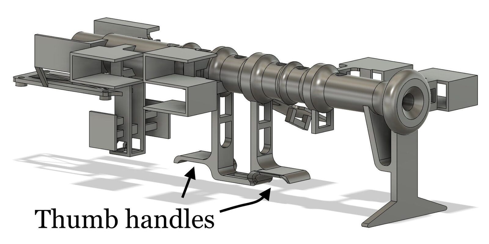
Flute body.
Apart from the electronic mouthpiece described above, the flute also has an acoustic mouthpiece. Both mouthpieces share the same flute body (Figure 7), making it electronic-acoustic hybrid [10].
Synthesizer, DAC, and Speaker
The system originally used FluidSynth3 to synthesize flute sounds on the host PC. However,
The non-real-time OS (e.g. Windows or Mac) caused ~150 ms latency.
Playing sounds on the PC lacked vibration feedback on the player’s lips.
To solve those, we migrate the audio synthesis from the host PC to the tutoring flute. The flute is now equipped with an LM386 amplifier and a 2W speaker (2.8 cm 0.5 cm), vibrating the flute as it makes sounds. To bypass Bluetooth and OS latencies, we synthesize the flute sounds directly on the Arduino Nano. For the amplitude to be controllable, we use a 1-bit digital-to-analog converter where the Arduino outputs the sound pressure using an ultrasonic PWM signal and a capacitor smoothes the PWM signal as a low-pass filter.
Software Features and Rationales Behind Them
Haptic Guidance
We use seven modes of haptic guidance, three of which were proposed in [4]: The mandatory mode strictly controls the fingering. The hinted mode applies force at the note onsets but does not sustain the guidance throughout the note’s duration. The adaptive mode exerts guidance only when the learner makes a mistake. The guidance is finger-wise, i.e. the correct fingers are left untouched. Now, we propose a new adaptive mode where the player leads the song progression and the system does not enforce a fixed tempo. We name it free-tempo adaptive mode, and the original adaptive mode is renamed as the strict-tempo adaptive mode. Additionally, in the free-tempo no-haptic mode and the strict-tempo no-haptic mode, there is no haptic guidance but the playhead moves across the score. The free play mode has neither any haptic guidance nor a playhead, mimicking the traditional sight-play experience of reading from sheet music.
In strict-tempo modes, the system rolls the playhead at a steady tempo (similar to the mandatory and the hinted mode) and checks the player’s fingering at every note’s onset. In free-tempo modes, the playhead sticks to note onsets and only advances if the learner plays the current note correctly.
We believe the mandatory mode enables a novice to have a haptic understanding of a song even before learning any musical notations. The hinted mode requires the learner to actively sustain the fingering, building muscle memory. The adaptive modes require the learner to either actively recall the song or read the score. The adaptive modes also give the learner finger-wise knowledge of results (KR) immediately after her actions, allowing her to pinpoint her problem, learn the correction before it is too late, and self-evaluate during training. When the learner plays under an adaptive mode and triggers zero haptic guidance, she knows she has mastered the song.
While the fingering is tutored by both haptic and visual feedback, the breath is tutored by visual feedback only.
Visual Interface

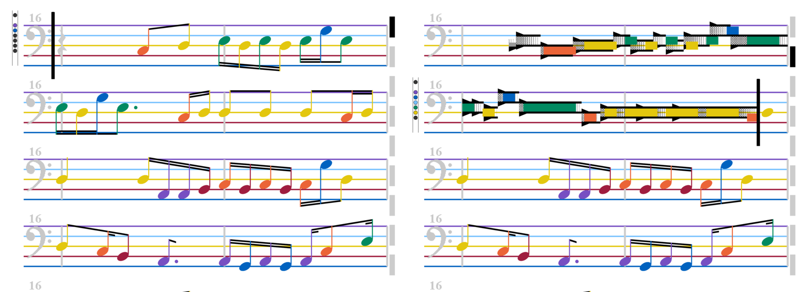
Our visual interface displays “丑八怪“. Left: the playhead is at the start. Right: the playhead is at bar 3. The bass clef with 16va supports pitches from F4 to B5 without ledger lines. We choose the bass clef to minimize the subject’s previous literacy with the staff notation and avoid the ceiling effect.
In our interactive staff (Figure 8), the notes in the future are displayed using the modern staff notation. As the playhead moves past a note, it becomes a colored rectangle, displayed using the “rainbow score” notation proposed by [1]. Similar to [1], we display visual KR feedback (i.e. the black masks in the right panel of Figure 8) to show the learner’s played notes in real-time.
We believe the modern staff notation, with its stems and beams, is good at showing the time structure of the music. The rainbow score notation is time-continuous and less abstract, therefore better at communicating the player's mistakes both pitch-wise and tempo-wise. We combine their advantages by separating the two schemes with the playhead.

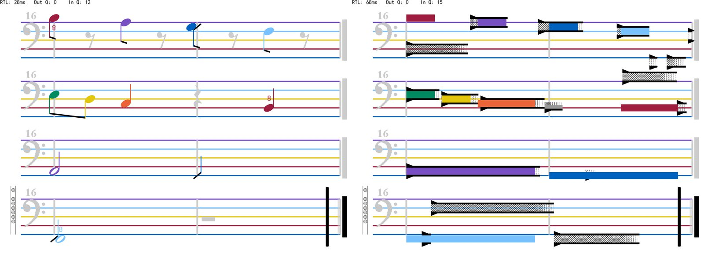
Left: mistake classification view. Right: the corresponding time-continuous view. Missed notes are displayed as a dash. Correctly played notes are displayed using the regular modern staff notation. Temporal mistakes (early/late) are visualized by horizontally offsetting the note from its dash. Octave mistakes, where the fingering is correct and the breath is wrong, are marked with labels “8”.
We design an algorithm (Table 2) to identify fingering mistakes, octave mistakes, and timing mistakes from the continuous performance data. The classification is visualized as shown in Figure 9. The learner can toggle the classification visualization when reviewing her performance.
This feature summarizes high-level, note-wise feedback for the learner to have a more conceptual assessment of her performance.

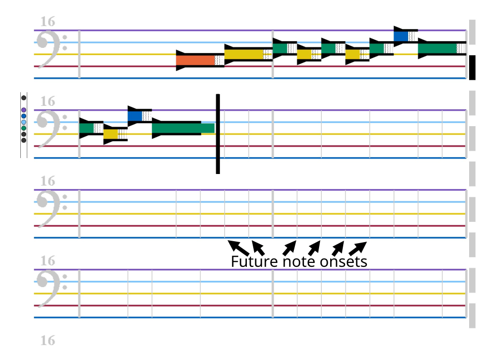
Reveal-the-past visual mode.
The haptic mode here is free-tempo adaptive.
We implement a reveal-the-past option to hide the future notes, which is demonstrated in Figure 10. The gray vertical lines show the onset of future notes to assist recall. The reveal-the-past option does not affect haptic feedback.
We believe the learner can use this option to practice song memorization.
Auditory Output
Our system has four auditory outputs:
The flute synthesizes the player’s performance in real-time.
Clicking the “gound-truth” button plays the correct performance of the song.
Clicking the “performance review” button plays the learner’s performance in the last playthrough.
During any playback or strict-tempo training, the host PC plays two timbres of metronome ticks to establish downbeats and upbeats.
Curriculum
Both the visual KR feedback and the reveal-the-past mode can be toggled, forming visual modes. For haptic feedback, there are 7 modes. The Cartesian product implies mode combinations. Different mode combinations pose different cross-modal tasks for the learner and practice different skills. To use those mode combinations to induce general musicality in the learner, we propose a scaffolding music curriculum.
Scaffolding, originally proposed by Wood et al, refers to an educational environment where the learner focuses on what little she can learn at the moment and leaves the unlearnable to the tutor's assistance [11]. The technique of scaffolding well suits musical education because even the basic musical activities involve the coordination of various multimodal skills. For example, to play a simple song on the flute, the player must know the manipulation of her fingers, the control of her breath, and the song to play, either via her sight-playing ability or via her memory of the song. That is a lot to ask for from a beginner. To solve this, traditional music education usually follows a theory-then-practice, etude-then-song approach, requiring the student to first develop a solid foundation of e.g. how to read the staff notation. The drawback is obvious: musical novices, especially kids, during the initial incubation phase, may feel daunted or even quickly lose interest before they can enjoy making music for their first time. Through scaffolding with smart tutoring machines, we make it possible for a beginner to learn one basic thing at a time while leaving the rest to the tutor’s assistance, always making pleasant music in the process. While the learner enjoys the positive feedback brought by the successful performance, the assistance gradually fades away [12], leaving the learner with just enough guidance to progress on her own [13] and internalize the musical skills being practiced. Eventually, no more assistance is needed in all tasks, and the learner has acquired general musicality.
Curriculum skeleton.
Learning goal | Haptic mode | Visual KR feedback | Reveal-the-past |
|---|---|---|---|
familiarize | mandatory / hinted | on | off |
sight-play | free-tempo adaptive | on | off |
free play | / | / | |
strict-tempo adaptive / hinted | on | off | |
strict-tempo no-haptic | on | off | |
| free-tempo adaptive | on | on |
strict-tempo adaptive | on | on | |
free play | / | / |
To implement such a fading scaffold, our curriculum (Table 1) starts with full haptic guidance modes (e.g. mandatory) and later transitions to weaker guidance modes (e.g. adaptive, no-haptic, reveal-the-past). One advantage of haptic guidance is that since playing an instrument is itself a haptic activity, the player needs no cross-modal translation, which makes the task easy [7]; later, weak-guidance modes require the learner to perform real-time cross-modal translation (e.g. visual -> haptic, auditory -> motory), therefore building up her generalizable musical skills (e.g. sight-playing, playing by ear).
Another goal of scaffolding is to evenly amortize the required cognitive load among the learning phases. In our curriculum, the song-memorization task is strictly after the sight-playing task, which follows a natural music-learning order. Additionally, the flute’s timbre is versatilely controlled by the breath, which is usually distracting for beginners when they are still figuring out the fingerings and octave control. In our curriculum, the learner is not asked to control the timbre of the acoustic flute until she masters the electric flute, whose timbre is trivially stable.
Pilot Study
To study the music learning process with our system, we conduct a small-scale, long-term, qualitative pilot user study. Our pilot study pursuits the following learning outcomes:
Perform songs on the electronic flute with the correct melodic sequence and rhythm. The songs have rest notes and span across two octaves.
Sight-play novel pieces on the electronic flute by reading the colored modern staff notation.
Memorize and reproduce some songs on the electronic flute without reading the score.
Transfer learned skills to the acoustic flute and master basic control of the timbre.
Pilot Study Design
Each subject uses our tutoring system to learn to play the flute while a conductor guides the tutoring process and interviews the subject throughout three sessions of ~4 hours. Table 4 lists the detailed procedures.
For each song, the first step is usually playing the ground-truth audio. Then either the conductor suggests training modes according to Table 1 (in earlier sessions) or the subjects choose the modes they want (in later sessions).
We design a filter-then-simplify algorithm (Table 3) to harvest 371 songs from the beat-aligned version [14] of POP909 [15] to be the learning materials. Figure 8 shows one such song.
Results and Discussions
Ideally, we would recruit musical novices as subjects, but COVID-19 constrained our recruiting ability. Two subjects, S1 and S2, participated. S1 is aged 21, male, and has played the saxophone for six years. S1 reads sheet music but cannot sight-play. S1 never used the bass clef. S1 knows little music theory but can reproduce a melody by ear via trial and error on the saxophone. S2 is aged 23, male, played the piano for age 4 - 8, plays the harmonica now, and plays no wind instruments. S2 learned basic music theory on the piano and can classify trichords by ear. S2 reads sheet music but has not practiced for years. Both subjects have non-deficient hearing and color vision.
Mandatory Mode
Before learning anything else, S1 learned the scale with the mandatory mode. After three playthroughs, S1 believed he could reproduce the scale. However, after switching to the free play mode, he gave up right away and realized he had not paid attention during the mandatory mode.
Discussions: The mandatory mode sometimes gives a false sense of mastery. We should utilize this to foster confidence while using other modes to prevent the learner from misjudging the need to practice.
Motor Skill Prerequisites and Tendency to Active Learning
We required the learners to fully relax their fingers during the mandatory mode. S2 pointed out that relaxing is already a nontrivial motor skill. Additionally, Both the subjects’ fingers were not well disentangled during the hinted mode: when they lifted one finger up according to the hints, its adjacent fingers were also inadvertently lifted up. The hinted mode did not correct such movements, since it assumed the previously guided fingers would always stay in the correct place.
Discussions: We took for granted two nontrivial motor skills: fully relaxing one’s fingers, and controlling each finger independently. We need to consider them as musical skills worthy of training.
As a result of those erroneous assumptions in the mandatory mode and the hinted mode, the subjects came up with their own way of using those modes. S1 and S2 actively sustained fingerings in the mandatory mode, which had been the intended usage of the hinted mode. S1 actively played the song in the hinted mode, which had been the intended usage of the adaptive mode. We note the common theme to drift towards more active modes of learning. This preference may be caused by prior musical backgrounds. Ideally, the system should adapt the curriculum to such preferences.
Denotative vs. Connotative Meanings of Tactile Signals
The hinted mode confused S1 very much. During the first three playthroughs, S1 “[had] no idea what the machine [was] doing”. S1 wanted the guidance to sustain for longer. The conductor changed the sustain duration from 30 ms to 50 ms, and S1 said “Yes. The hold time needs to be long.” S1 said the intention of the tactile signal became clear.
Discussions: Here we propose the distinction between the denotative and the connotative meanings of tactile signals. Connotative meanings are constructed through association, have protocols, and need parsing, e.g. reading Braille. On the other hand, denotative meaning is the direct content of the signal, and the receiver needs no prior training or association to understand it, e.g. when the barber touches your head you instinctively tilt your head in the direction the barber intended. Denotative meanings of tactile signals are powerful because they require neither explanation nor familiarization. In our case, the tactile feedback under hinted and adaptive modes are connotative, thus posing parsing challenges. The conductor’s explanation of what to expect and the learner’s prior exposures to the haptic interaction proved necessary for the learner not to get lost. S1 noticed that only when the guidance sustained for 50 ms did the hinted mode convey denotative meanings to him, causing him to instinctively feel “my finger should stay there”. We should study the space of tactile signals with denotative meanings to propose powerful, intuitive, protocol-free haptic interactions.
Visual KR Feedback
S1 usually ignored the visual KR feedback. Only at the very beginning did S1 notice some octave mistakes via the visual KR feedback. Typically, the conductor had to ask S1 after a playthrough, “what does the visual KR feedback show?” Then S1 immediately noticed his mistakes via the visual KR feedback but reported to have not noticed them earlier.
Discussions: We had an underlying assumption that as long as the critical information was available on the interface, the learner would perceive it. We neglected the learner's limited cognitive capacity and their selective attention to the information presented. We should study the dynamic importance ranking of various real-time feedback and how the UI design may better guide the learner’s attention.
S2 mostly used his ears to catch mistakes. The visual KR feedback did not help S2 correct his fingerings. S2 later concluded “when the [visual KR feedback] flashes up and down, there’s an octave mistake”, and said the flash was more effective than a stationary visual clue. However, when the conductor turned off visual feedback, S2 was not significantly affected. S2 attributed it to “knowing the staff notation too well.”
Strict-tempo Adaptive Mode
When paying attention, S1 perceived effective feedback from the strict-tempo adaptive mode: “When I made a mistake, I wasn’t sure if it’s a mistake, just felt doubt. Then the guidance kicked in. I suddenly knew the correct fingering, and consciously corrected my mistakes.” Other times, however, S1 was totally confused and all tactile signals were ineffective. Reviewing the playthrough, S1 correctly identified all his mistakes and reported he knew the notes were wrong while playing them but used neither the visual KR feedback nor the haptic feedback. In later playthroughs, however, S1 said the free play mode made him think he knew everything while the adaptive modes told him about every mistake, which implies that he must have perceived some feedback after all.
S1 thought the feedback in the strict-tempo adaptive mode was too late, while S2 thought the feedback was too soon, therefore not forgiving enough to late notes. We conclude that the allowance parameter should be learner-dependent and song-dependent.
Free-tempo Adaptive Mode
S2 called the free-tempo adaptive mode “his favorite mode yet, [because] it allows you to move first”. S2 was unsatisfied with how octave mistakes were not corrected. The conductor asked if he noticed the visual KR feedback marking the octave mistakes, and S2 said: “No. I was only listening”. Later, S2 remarked he should not learn novel songs with the free-tempo adaptive mode, otherwise, he would mess up the rhythm and “destroy [his] musical sense”. He claimed that novel songs should be practiced with the mandatory mode first.
Rhythm
Training with our tutoring system for ~11 hours yielded no significant improvement in S1’s rhythmic abilities. We thought haptic signals could help the learner encode the rhythm, but S1 and S2 hardly requested haptic guidance modes when facing rhythmic challenges. A possible explanation is that the flute mainly does rhythm with breathing, not fingering, so we should experiment with haptic guidance on the breath (e.g. via torso force feedback [16]).
In strict-tempo modes, S1 sometimes “cheated the rhythm” by playing a note immediately after the playhead moved past the note’s onset. He admitted not having an encoding for the rhythm and relied on the playhead. We should offer alternative playhead behaviors (e.g. note-wise) to isolate this cheat.
Multimodal Redundancy and Unbalanced Practicing
To learn a rhythm pattern, one can either read the score or listen to the ground-truth audio. Similarly, to perform a song, one can either learn to sight-play and base the performance on the score or memorize the song and base the performance on memory. These are some examples of the multimodal redundancies in music, which often tempt the learner to depend heavily on what she already mastered and avoid practicing unfamiliar skills. Since general musicality requires the musician to be proficient in a multitude of overlapping skills, a good tutoring system should detect if the learner is bypassing any subtasks.
When S1 reproduced rhythm patterns, he mainly recalled the ground-truth audio. The score was “of little help, only telling me if there’s going to be a rest next”. This gives us an idea that the tutoring system can play a ground-truth audio clip inconsistent with the score and see if the learner discovers the inconsistency. More tricks like this should be considered, enabling the tutoring system to probe the inner processes of the learner.
Two Stages of Song Memorization

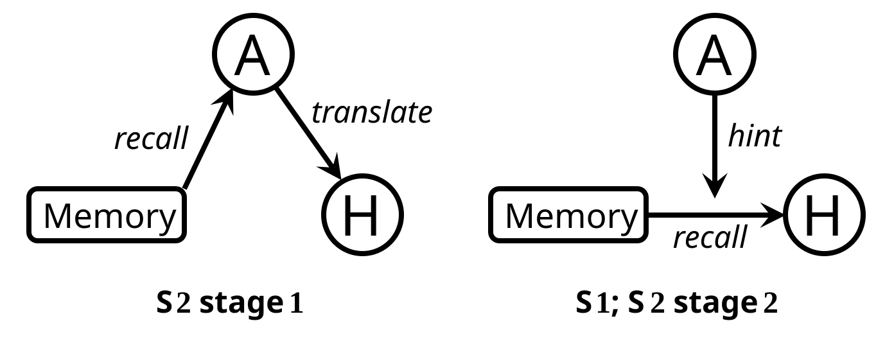
Multimodal processes of song memorization.
A: Audio, H: Haptic
According to S1, his reproduction of a song was the active recall of performance motion with the melody in his mind as a hint (Figure 11 right). S2, on the other hand, memorized songs in two stages. In stage 1, he memorized the melody and translated the melody to performance during reproduction (Figure 11 left). Becoming more familiar with the song, S2 reached stage 2 where he memorized the performance motion and skipped multimodal translation (Figure 11 right).
Discussions: The skill to translate from audio to haptic (motory) representations is implicitly trained by both the sight-play task and the song memorization task for learners like S2.
Electronic vs. Acoustic Flute
How did the subjects transfer what they learned on the electronic flute to the acoustic flute? We expected learning to properly cover the flute holes and taming the timbre with the breath would take a while, but surprisingly S2 could play the scale on his first try on the acoustic flute.
S1 thought the timbre he produced was “too bad”, and S2 said the acoustic flute was prone to making noise sounds, which could “deter the learner’s willingness to practice”. This supports our curriculum design where the learner trains with the electronic flute before learning to control the acoustic timbre with the breath.
Weak Prerequisite Relations
S2 was unsatisfied with how slowly the curriculum progressed. During scale training, S2 asked: “When can I play a song?” S2 believed a learner can proceed to later tasks even when the foundation is not 100% solid. “In fact, the basic skills will never be 100% solid. One perfects them by practicing various tasks, back and forth. Give the student more freedom.”
Discussions: Our system can benefit from a more flexible sequence of skill training. Furthermore, when the learner tries downstream tasks, our system should detect problems with her prerequisite skills and suggest reviewing the problematic skills.
Miscellaneous
S1 requested an “A-B Repeat” feature to practice specific segments.
S1 noted the need for a synthesis timbre better than the saw wave: “If the timbre was nicer, I’d be more relaxed and focused.”
In reveal-the-past modes, S1 hardly looked at the revealed notes and performed about the same with eyes closed.
S2 recommended the system congratulate the learner’s mastery of songs and skills, making him feel his progress.
S2 criticized the curriculum for not teaching the pitch names.
S2 proposed a mode where the learner imitates the haptic guidance one note at a time.
S2 noted the free-tempo no-haptic mode provided positive feedback using the playhead progression, unlike the free play mode which can leave the learner asking “did I get it right”.
Conclusion and Future Work
In this paper, we present a multimodal music tutoring machine with a systematic curriculum. The learning process is investigated with a pilot study that sheds light on what a tutoring machine can do as well as the different musicians’ multimodal musical processes. The “Results and Discussions” subsection of the pilot study has proposed many changes to the tutoring curriculum, which we will evaluate and integrate in the near future. Additionally, we will study the implementation of haptic feedback for breath. As the next step, we will conduct a quantitative experiment to test the efficacy of the proposed methods, e.g. with regard to learning efficiency and interest retainment. Our study centers on the flute, but the haptic and visual feedback is easily portable to other wind instruments with stable finger motions. The tutoring curriculum should be generalizable to most musical instruments.
Acknowledgment
This work is partially funded by NSSFC2019, Project ID: 19ZDA364. We thank Yinmiao Li for providing counseling regarding pilot study techniques and interview analysis methodology.
Ethics Statement
Both subjects gave informed consent. All haptic feedback was < 5 Watts and could not harm the user. Garbage 3D prints were recycled.
Appendices
Appendix 1. Mistake Classification Algorithm
1. | Traverse the performed notes. Match each with a ground-truth note that shares the same fingering and the minimum onset difference. | |
2. | Traverse the ground-truth notes. For each one, denoted , | |
a. | If less than 60% of ’s duration is covered with matched performed notes, label as “missed”. | |
b. | If at least 30% of ’s duration match with performed notes of incorrect octaves, label as “octave mistake” with direction decided by majority duration. | |
c. | Find the performed note whose onset is the closest to the onset of . If it’s 150 ms early or late, label as “timing mistake”. |
Appendix 2. Song Extraction Algorithm
The task of this algorithm is to harvest as many valid song fragments from POP909 as possible. A song fragment is valid if it is diatonic, stays within the pitch range F4-B5, and has rhythm patterns representable with our interactive staff. The source code is at https://github.com/Daniel-Chin/A-V-H-General-Music-Tutoring-2022/blob/main/pop909_filter_simplify/transformPOP909.py
Song Extraction Algorithm.
Recursively parse the song into a temporal binary tree. The tree depth gives the discrete time unit. |
Round onsets and offsets to the discrete time unit to get a quantized representation. The following steps mutate the quantized representation. |
Insert rest notes. Each rest note fills the entire gap between an offset and an onset. |
Split cross-measure notes and rest notes at the barlines. |
Round the onset and offset of rest notes to 8th-note positions. |
Find (rest) notes with quantized duration , which are not representable. For such a note , |
if the next note is a rest note, shrink until its duration is representable. (As a consequence, the onset of the rest note becomes earlier.) |
Otherwise, recursively cut the irrepresentable notes at binary midpoints, following metric grouping principles. |
Label the notes with their duration type. (-th note? Dotted? Hollow?) |
Determine whether adjacent notes should be connected with beams. |
Calculate numerical onsets and offsets from the quantized representation. |
Appendix 3. Pilot Study Procedure
The conductor shows how one holds the flute. |
The subject experiences haptic guidance on one finger at a time, while the conductor optimizes the guidance power for the subject. |
The subject learns the single-octave scale starting from the mandatory mode. Then, the subject verbally describes the scale. |
The conductor introduces the visual KR feedback. |
The subject learns the two-octave scale. The conductor demonstrates all haptic modes and the mistake classification view with the two-octave scale. |
The subject learns one song after another, acquiring the ability to sight-play. After each adaptive mode playthrough, the conductor asks the subject to recall her mistakes. |
The subject picks some songs she wants to memorize with the reveal-the-past mode. The subject learns to perform them from memory. |
Closing interview questions. |
Footnotes
https://github.com/Daniel-Chin/A-V-H-General-Music-Tutoring-2022/tree/main/hardware
↩https://www.arduino.cc/reference/en/libraries/pca9685-16-channel-pwm-driver-module-library/
↩- ↩
Citations
- ↩Xia, G., Chin, D., Zhang, Y., Zhang, T., & Zhao, J. (2020). Interactive Rainbow Score: A Visual-centered Multimodal Flute Tutoring System. In R. Michon & F. Schroeder (Eds.), Proceedings of the International Conference on New Interfaces for Musical Expression (pp. 208–213). Birmingham City University. https://doi.org/10.5281/zenodo.4813324
- ↩Huang, K., Do, E. Y.-L., & Starner, T. (2008). PianoTouch: A wearable haptic piano instruction system for passive learning of piano skills. 2008 12th IEEE International Symposium on Wearable Computers, 41–44.
- ↩Fujii, K., Russo, S. S., Maes, P., & Rekimoto, J. (2015). MoveMe: 3D haptic support for a musical instrument. Proceedings of the 12th International Conference on Advances in Computer Entertainment Technology, 1–8.
- ↩Zhang, Y., Li, Y., Chin, D., & Xia, G. (2019). Adaptive Multimodal Music Learning via Interactive Haptic Instrument. In M. Queiroz & A. X. Sedó (Eds.), Proceedings of the International Conference on New Interfaces for Musical Expression (pp. 140–145). UFRGS. https://doi.org/10.5281/zenodo.3672900
- ↩Tom, A., Singh, A., Daigle, M., Marandola, F., & Wanderley, M. (2020). Haptic Tutor-A haptics-based music education tool for beginners. International Workshop on Haptic and Audio Interaction Design.
- ↩Xia, G., Chin, D., Zhang, Y., Zhang, T., & Zhao, J. (2020). Interactive Rainbow Score: A Visual-centered Multimodal Flute Tutoring System. In R. Michon & F. Schroeder (Eds.), Proceedings of the International Conference on New Interfaces for Musical Expression (pp. 208–213). Birmingham City University. https://doi.org/10.5281/zenodo.4813324
- ↩Huang, K., Do, E. Y.-L., & Starner, T. (2008). PianoTouch: A wearable haptic piano instruction system for passive learning of piano skills. 2008 12th IEEE International Symposium on Wearable Computers, 41–44.
- ↩Feygin, D., Keehner, M., & Tendick, R. (2002). Haptic guidance: Experimental evaluation of a haptic training method for a perceptual motor skill. Proceedings 10th Symposium on Haptic Interfaces for Virtual Environment and Teleoperator Systems. HAPTICS 2002, 40–47.
- ↩Grindlay, G. (2008). Haptic guidance benefits musical motor learning. 2008 Symposium on Haptic Interfaces for Virtual Environment and Teleoperator Systems, 397–404.
- ↩Fujii, K., Russo, S. S., Maes, P., & Rekimoto, J. (2015). MoveMe: 3D haptic support for a musical instrument. Proceedings of the 12th International Conference on Advances in Computer Entertainment Technology, 1–8.
- ↩Yang, X.-D., Bischof, W. F., & Boulanger, P. (2008). Validating the performance of haptic motor skill training. 2008 Symposium on Haptic Interfaces for Virtual Environment and Teleoperator Systems, 129–135.
- ↩gus xia, & Dannenberg, R. B. (2018). ShIFT: A Semi-haptic Interface for Flute Tutoring. In T. M. Luke Dahl Douglas Bowman (Ed.), Proceedings of the International Conference on New Interfaces for Musical Expression (pp. 162–167). Virginia Tech. https://doi.org/10.5281/zenodo.1302531
- ↩Zhang, Y., Li, Y., Chin, D., & Xia, G. (2019). Adaptive Multimodal Music Learning via Interactive Haptic Instrument. In M. Queiroz & A. X. Sedó (Eds.), Proceedings of the International Conference on New Interfaces for Musical Expression (pp. 140–145). UFRGS. https://doi.org/10.5281/zenodo.3672900
- ↩Xia, G., Chin, D., Zhang, Y., Zhang, T., & Zhao, J. (2020). Interactive Rainbow Score: A Visual-centered Multimodal Flute Tutoring System. In R. Michon & F. Schroeder (Eds.), Proceedings of the International Conference on New Interfaces for Musical Expression (pp. 208–213). Birmingham City University. https://doi.org/10.5281/zenodo.4813324
- ↩Zhang, Y., Li, Y., Chin, D., & Xia, G. (2019). Adaptive Multimodal Music Learning via Interactive Haptic Instrument. In M. Queiroz & A. X. Sedó (Eds.), Proceedings of the International Conference on New Interfaces for Musical Expression (pp. 140–145). UFRGS. https://doi.org/10.5281/zenodo.3672900
- ↩Chin, D., Zhang, I., & Xia, G. (2021, June). Hyper-hybrid Flute: Simulating and Augmenting How Breath Affects Octave and Microtone. Proceedings of the International Conference on New Interfaces for Musical Expression. https://doi.org/10.21428/92fbeb44.c09d91be
- ↩Zhang, Y., Li, Y., Chin, D., & Xia, G. (2019). Adaptive Multimodal Music Learning via Interactive Haptic Instrument. In M. Queiroz & A. X. Sedó (Eds.), Proceedings of the International Conference on New Interfaces for Musical Expression (pp. 140–145). UFRGS. https://doi.org/10.5281/zenodo.3672900
- ↩Xia, G., Chin, D., Zhang, Y., Zhang, T., & Zhao, J. (2020). Interactive Rainbow Score: A Visual-centered Multimodal Flute Tutoring System. In R. Michon & F. Schroeder (Eds.), Proceedings of the International Conference on New Interfaces for Musical Expression (pp. 208–213). Birmingham City University. https://doi.org/10.5281/zenodo.4813324
- ↩Xia, G., Chin, D., Zhang, Y., Zhang, T., & Zhao, J. (2020). Interactive Rainbow Score: A Visual-centered Multimodal Flute Tutoring System. In R. Michon & F. Schroeder (Eds.), Proceedings of the International Conference on New Interfaces for Musical Expression (pp. 208–213). Birmingham City University. https://doi.org/10.5281/zenodo.4813324
- ↩Wood, D., Bruner, J. S., & Ross, G. (1976). The role of tutoring in problem solving. Journal of Child Psychology and Psychiatry, 17(2), 89–100.
- ↩McNeill, K. L., Lizotte, D. J., Krajcik, J., & Marx, R. W. (2006). Supporting students’ construction of scientific explanations by fading scaffolds in instructional materials. The Journal of the Learning Sciences, 15(2), 153–191.
- ↩Hogan, K. E., & Pressley, M. E. (1997). Scaffolding student learning: Instructional approaches and issues. Brookline Books.
- ↩Grindlay, G. (2008). Haptic guidance benefits musical motor learning. 2008 Symposium on Haptic Interfaces for Virtual Environment and Teleoperator Systems, 397–404.
- ↩Dai, S., Zhang, H., & Dannenberg, R. B. (2020). Automatic analysis and influence of hierarchical structure on melody, rhythm and harmony in popular music. arXiv Preprint arXiv:2010.07518.
- ↩Wang, Z., Chen, K., Jiang, J., Zhang, Y., Xu, M., Dai, S., & Xia, G. (2020). POP909: A pop-song dataset for music arrangement generation. Proceedings of the 21st International Society for Music Information Retrieval Conference, 38–45. https://doi.org/10.5281/zenodo.4245366
- ↩Li, Y., Piao, Z., & Xia, G. (2021, June). A Wearable Haptic Interface for Breath Guidance in Vocal Training. Proceedings of the International Conference on New Interfaces for Musical Expression. https://doi.org/10.21428/92fbeb44.6d342615